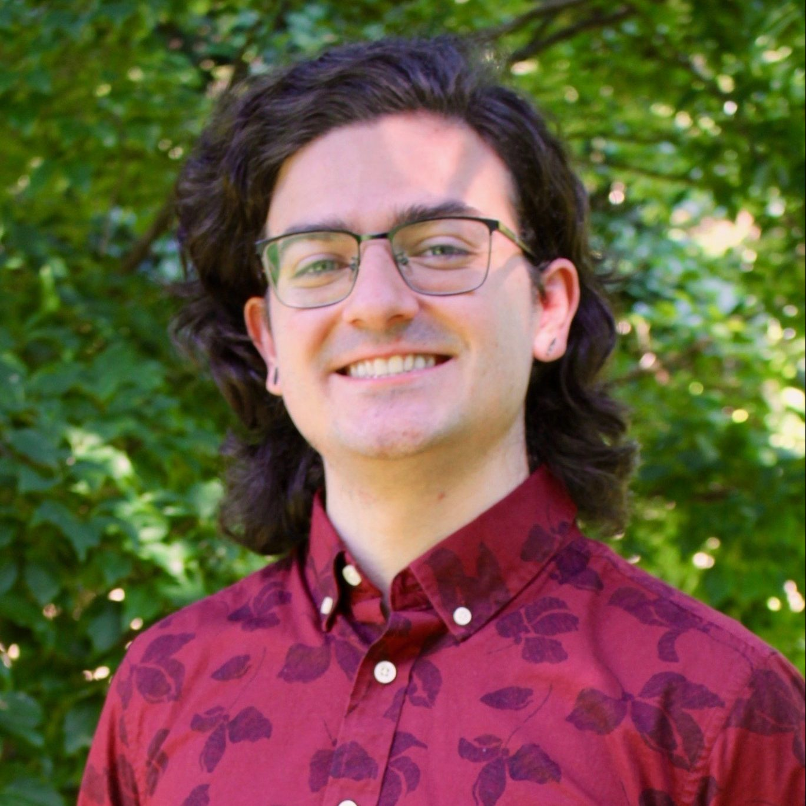

<!doctype html>
<html>
<head>
</head>
  <title>About Me</title>
  <meta name="description" content="About me">
  <meta name="keywords" content="michael crawshaw postdoc research fellow flatiron institute phd student george mason university computer science machine learning optimization deep federated distributed">
</html>

<body>
  <h1>Michael Crawshaw</h1>
  <p><a href="mailto:michael.crawshaw.4@gmail.com">Email</a> | <a
  href="Resume.pdf">CV</a> | <a
  href="https://scholar.google.com/citations?user=XVrMZ_4AAAAJ&hl=en">Google Scholar</a> | <a
  href="https://github.com/mtcrawshaw">GitHub</a> | <a
  href="https://twitter.com/CrichaelMawshaw">Twitter</a> | <a
  href="https://www.linkedin.com/in/michael-crawshaw-5a6aab150/">LinkedIn</a></p>
  

  <h2>About Me</h2>
  <p>I am a Research Fellow at the Flatiron Institute, Center for Computational
  Mathematics, doing research in optimization for machine learning. In general, my goal
  is to develop theory that enables understanding of the empirical behavior of
  optimization algorithms, and algorithms that leverage this understanding for practical
  performance. Some research topics include:</p>
  <ul>
    <li> Unstable optimization under large step sizes/Edge of Stability.</li>
    <li> Non-Euclidean optimizers, e.g. Muon.</li>
    <li> Distributed optimization/federated learning.</li>
    <li> Optimization under relaxed smoothness.</li>
  </ul>

  <p>I received my PhD in computer science at George Mason University, advised by
  Professor Mingrui Liu, in April 2026. Before studying at George Mason, I received a
  BS in mathematics and computer science from Ohio State University.</p>

  <h2>Publications</h2>
  <ul>
    <li><a href="https://arxiv.org/abs/2510.09827">An Exploration of Non-Euclidean Gradient Descent: Muon and its Many Variants.</a><br>
    <b>Michael Crawshaw</b>, Chirag Modi, Mingrui Liu, Robert M. Gower<br>
    International Conference on Machine Learning, 2026.</li>
    <li><a href="https://arxiv.org/abs/2603.05002">Non-Euclidean Gradient Descent Operates at the Edge of Stability.</a><br>
    Rustem Islamov, <b>Michael Crawshaw</b>, Jeremy Cohen, Robert M. Gower<br>
    International Conference on Machine Learning, 2026 (oral).</li>
    <li><a href="https://arxiv.org/abs/2602.12471">Tight Bounds for Logistic Regression with Large Stepsize Gradient Descent in Low Dimension.</a><br>
    <b>Michael Crawshaw</b>, Mingrui Liu<br>
    Conference on Learning Theory, 2026.</li>
    <li><a href="https://arxiv.org/abs/2506.13974">Constant Stepsize Local GD for Logistic Regression: Acceleration by Instability.</a><br>
    <b>Michael Crawshaw</b>, Blake Woodworth, Mingrui Liu<br>
    International Conference on Machine Learning, 2025.</li>
    <li><a href="https://arxiv.org/abs/2501.13790">Local Steps Speed Up Local GD for Heterogeneous Distributed Logistic Regression.</a><br>
    <b>Michael Crawshaw</b>, Blake Woodworth, Mingrui Liu<br>
    International Conference on Learning Representations, 2025.</li>
    <li><a href="https://arxiv.org/abs/2505.04599">Complexity Lower Bounds of Adaptive Gradient Algorithms for Non-convex Stochastic Optimization under Relaxed Smoothness.</a><br>
    <b>Michael Crawshaw</b>, Mingrui Liu<br>
    International Conference on Learning Representations, 2025.</li>
    <li><a href="https://arxiv.org/abs/2410.23131">Federated Learning under Periodic Client Participation and Heterogeneous Data: A New Communication-Efficient Algorithm and Analysis.</a><br>
    <b>Michael Crawshaw</b>, Mingrui Liu<br>
    Neural Information Processing Systems, 2024.</li>
    <li><a href="https://proceedings.mlr.press/v235/bao24a.html">Provable Benefits of Local Steps in Heterogeneous Federated Learning for Neural Networks: A Feature Learning Perspective.</a><br>
    Yajie Bao, <b>Michael Crawshaw</b>, Mingrui Liu<br>
    International Conference on Machine Learning, 2024.</li>
    <li><a href="https://openreview.net/forum?id=Yq6GKgN3RC">Federated Learning with Client Subsampling, Data Heterogeneity, and Unbounded Smoothness: A New Algorithm and Lower Bounds.</a><br>
    <b>Michael Crawshaw</b>, Yajie Bao, Mingrui Liu (first two authors contributed equally)<br>
    Neural Information Processing Systems, 2023.</li>
    <li><a href="https://arxiv.org/abs/2302.07155">EPISODE: Episodic Gradient Clipping with Periodic Resampled Corrections for Federated Learning with Heterogeneous Data.</a><br>
    <b>Michael Crawshaw</b>, Yajie Bao, Mingrui Liu<br>
    International Conference on Learning Representations, 2023.</li>
    <li><a href="https://arxiv.org/abs/2208.11195">Robustness to Unbounded Smoothness of Generalized SignSGD.</a><br>
    (Alphabetical order) <b>Michael Crawshaw</b>, Mingrui Liu, Francesco Orabona, Wei Zhang, Zhenxun Zhuang<br>
    Neural Information Processing Systems, 2022.</li>
    <li><a href="https://arxiv.org/abs/2207.08204">Fast Composite Optimization and Statistical Recovery in Federated Learning.</a><br>
    Yajie Bao, <b>Michael Crawshaw</b>, Mingrui Liu<br>
    International Conference on Machine Learning, 2022.</li>
    <li><a href="https://arxiv.org/abs/2009.09796">Multi-Task Learning with Deep Neural Networks: A Survey.</a><br>
    <b>Michael Crawshaw</b><br>
    <i>arXiv:2009.09796</i>, 2020.</li>
  </ul>

  <h2>Service</h2>
  <ul>
    <li>2026: Reviewer for TMLR, AAAI, ICLR, ICML (awarded Silver Reviewer), NeurIPS, JMLR.</li>
    <li>2025: Reviewer for ICLR, AISTATS (awarded Best Reviewer), ICML (awarded Top Reviewer), NeurIPS (awarded Top Reviewer).</li>
    <li>2024: Reviewer for AISTATS, ICML, NeurIPS.</li>
    <li>2023: Reviewer for NeurIPS (awarded Top Reviewer).</li>
  </ul>

  <h2>Teaching</h2>
  <ul>
    <li> American University Adjunct Lecturer:
    <ul>
        <li>CSC 124: Exploring AI Through Programming (Summer 2026)</li>
    </ul>
    <li> GMU Graduate Teaching Assistant:
    <ul>
        <li>CS 657: Mining Massive Datasets (Fall 2020, Fall 2021)</li>
        <li>CS 471: Operating Systems (Fall 2020, Fall 2021, Spring 2022)</li>
        <li>CS 583: Analysis of Algorithms (Spring 2021)</li>
        <li>CS 571: Operating Systems (Spring 2021)</li>
        <li>CS 330: Formal Methods and Models (Fall 2019, Spring 2020)</li>
    </ul>
    <li> OSU Undergraduate Teaching Assistant:
    <ul>
        <li>CSE 3321: Automata and Formal Languages (Summer 2017, Fall 2017, Spring 2018)</li>
    </ul>
    <li> OSU Undergraduate Honors Math Mentor:
    <ul>
        <li>Math 4181H: Honors Analysis I (Fall 2016)</li>
        <li>Math 4182H: Honors Analysis II (Spring 2017)</li>
    </ul>
  </ul>

  <h2>Misc</h2>
  <ul>
    <li>In my spare time I like to develop open-source projects to use as tools in my
    life, including a simple arXiv paper recommender and a program to generate lessons
    for language learning by converting text files into bilingual audiobooks. Both
    projects are available at my <a href="https://github.com/mtcrawshaw">GitHub
    page</a>.</li>
    <li>My personal record for the 5000m run is 16:28 (this was in 2014, but I intend to
    be this fast again one day!)</li>
    <li>Mostly, I just want to work on interesting problems and help others do the
   same.</li>
  </ul>
</body>

</html>
